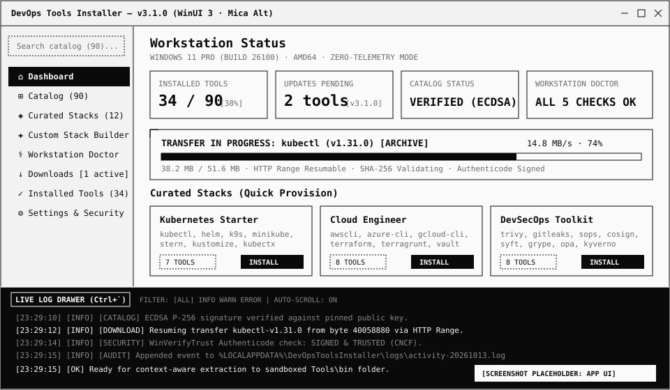
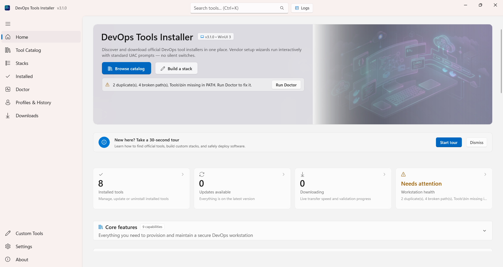
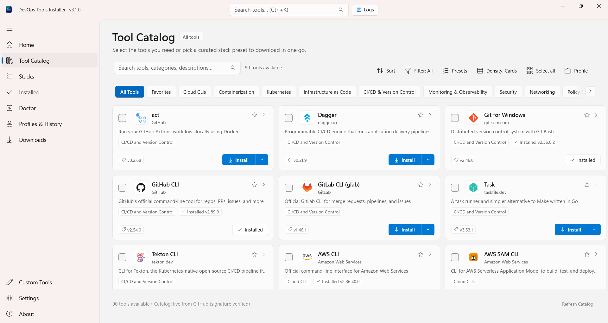
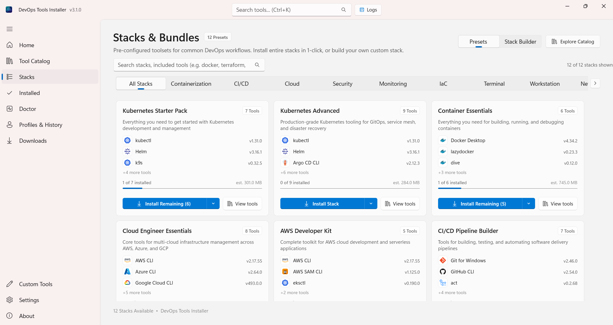
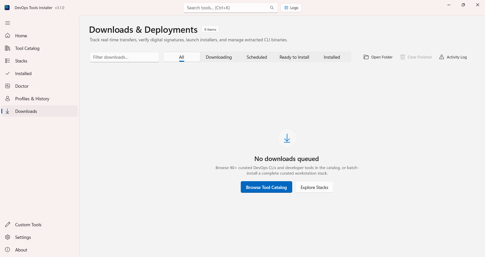
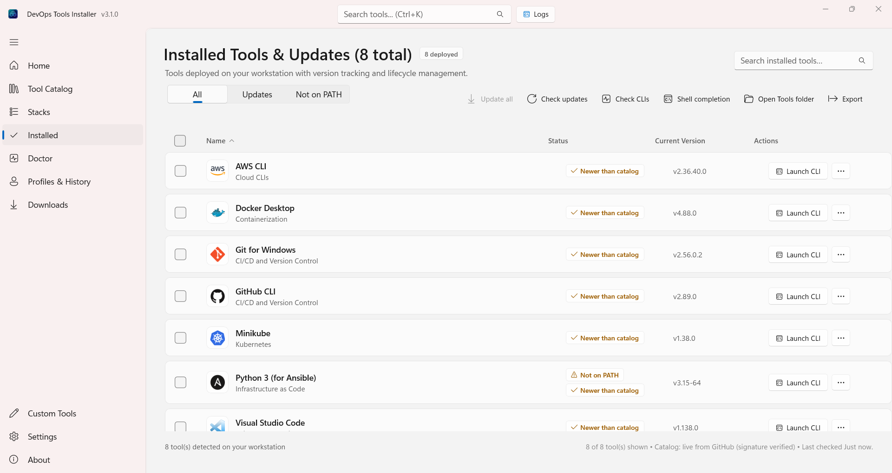
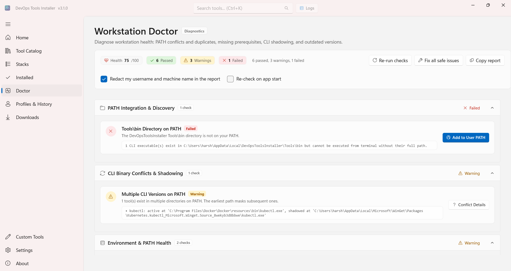
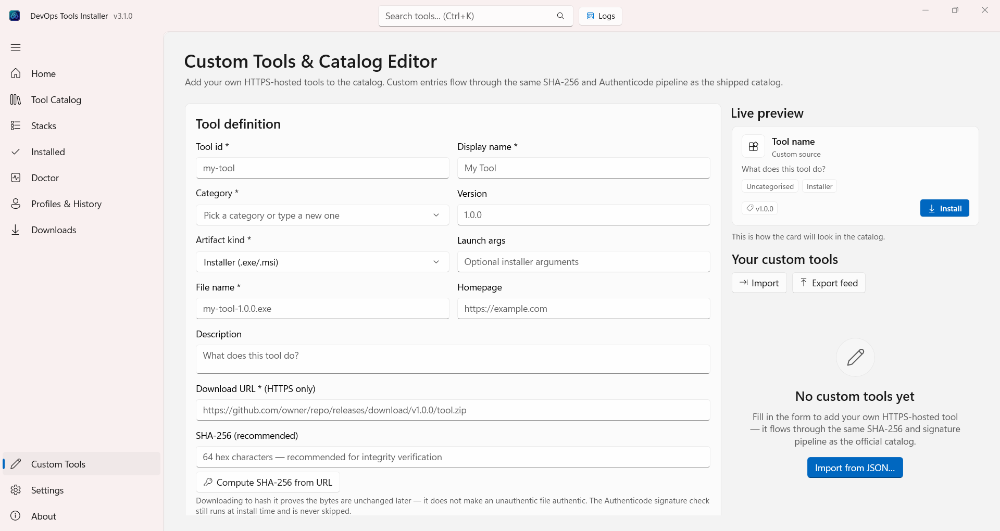
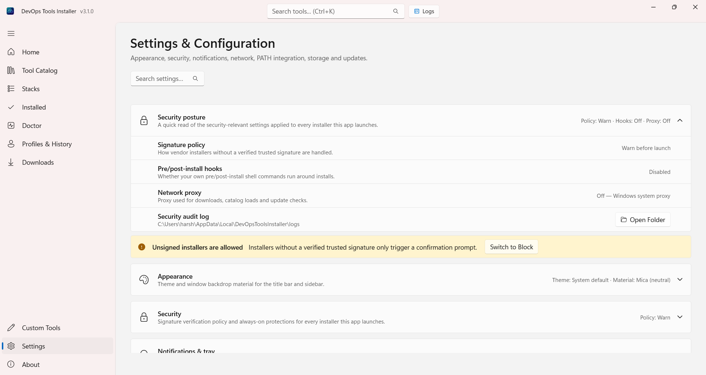
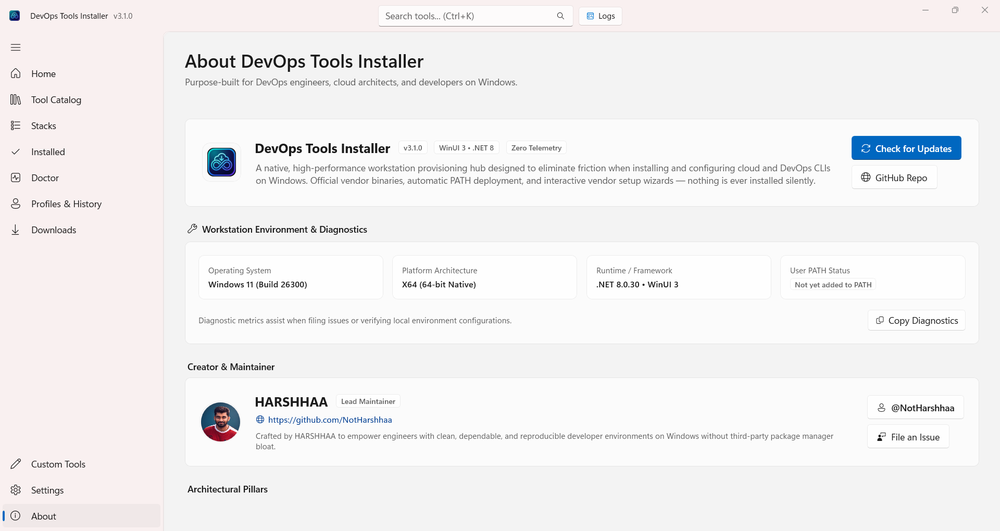

Direct Upstream Sources
Artifacts are fetched straight from official vendor release infrastructure (GitHub Releases, AWS, Azure, HashiCorp). No mirrors, no repackaging.
90 official tools and 12 curated stacks downloaded directly from upstream vendor endpoints. Built with WinUI 3 and Mica Alt. Zero silent installs, zero bundled binaries, zero telemetry.

Every logo below is the vendor's own mark, pulled from the same signed catalog the app installs from. Nothing is repackaged, nothing is mirrored.
Loading tool logos…
Real captures from the WinUI 3 application — catalog, stacks, downloads, installed inventory, profiles, doctor and settings. One window, no browser, no shell scripting required.










Browse an extensible catalog of 90 developer tools across 12 domains, or pick from 12 role-based Curated Stacks (Kubernetes, DevSecOps, Cloud Engineer, IaC).
Fetched over HTTPS only with automatic HTTP Range byte resumption. Every file is validated against signed SHA-256 hashes and Win32 Authenticode digital signatures.
Vendor wizards launch interactively with standard UAC prompts. Standalone binaries land cleanly in sandboxed user directories. Zero silent background changes.
Artifacts are fetched straight from official vendor release infrastructure (GitHub Releases, AWS, Azure, HashiCorp). No mirrors, no repackaging.
Every installer executes interactively with standard Windows UAC elevation. Mark-of-the-Web (ZoneId=3) is preserved so SmartScreen stays active.
Large installers continue from exact byte offsets via HTTP Range from .partial files. Dropped connections never force a restart from zero.
Interactive 2-column composer: drag tools into bespoke stacks, inspect live download size estimates, and export/import portable JSON presets.
5-point environment scan covering PATH duplicates, CLI collisions, missing prerequisites, and stale versions with 1-click confirmed remediations.
Universal collapsible drawer accessible across every page. Virtualized streaming of download events, SHA-256 verifications, and Authenticode checks.
Full terminal automation: --install, --install-bundle, --report, and PATH health tools with proper exit codes for scripts and CI.
Latency benchmarking on CLI binaries, 1-click shell completion script generation for PowerShell/Bash, and native InfoBadge update counters.
Close-to-tray mode, periodic 30-minute background tool-update checks, and native Windows toast notifications configured via Settings toggles.
Every download points exclusively to verified vendor endpoints. No community-repackaged binaries, no unvetted mirrors, and no bundled bloatware.
Every download, SHA-256 digest check, Authenticode signature check, and installation action is logged to an inspectable local audit file on disk.
No tracking scripts, no phone-home telemetry, and no background daemon services. Your machine configuration and tool inventory remain 100% private.
A purpose-built workstation control plane compared to package managers and manual setups.
| Capability | DevOpsToolsInstaller | WinGet | Chocolatey | Manual Browsing |
|---|---|---|---|---|
| Native WinUI 3 Dashboard | Yes (Mica Alt + Accent Theme) | No (CLI / Basic Store UI) | No (CLI / Third-party GUI) | No (Browser Tabs) |
| Curated Role Stacks (12 Presets) | Yes + Drag-and-drop Composer | No | No | No |
| Workstation Doctor (PATH & Collisions) | Yes (5-Point Diagnostics) | No | No | Manual Registry / CMD |
| Direct Official Vendor Endpoints | Yes (Zero Repackaging) | Varies by Manifest | Often Community Shimmed | Manual Finding |
| Resumable Partial Downloads | Yes (HTTP Range .partial) | No (Restarts on drop) | No | Browser Dependent |
| Authenticode WinVerifyTrust Policy | Yes (Configurable Warn / Block) | Hash check only | Optional Pro feature | SmartScreen prompt |
| Zero Silent Installs (Explicit UAC) | Guaranteed | Silent flags supported | Silent by default | Manual Wizard |
| Headless CLI & Report Generation | Yes (--install, --report, CI codes) | CLI only | CLI only | No |
Available on the Microsoft Store, through WinGet, as a standalone setup wizard, or as a portable CLI executable.